Frequency Display
The Frequency Display tries to ease your job of browsing through
frequencies, after the Frequency Analysis
has been done.
The most important buttons are the 5 first ones, which,
combined together, help you choose through a total of
8
different display modes
.
(Also note that the Frequency display is an extension of the EEG display , so please refer to it for all their common parts)
Buttons
Most of the EEG Buttons +
Display modes:
Mouse
Time navigation
Frequency navigation
Keyboard
Time navigation
Frequency navigation
Menus
Options
Technical points
Time considerations
Time & Frequency Cursors
Color scheme
Frequency normalization
Frequencies auto-scaling
Quality of display & Copy as Bitmap
More on displays with frequencies
Showing the frequencies as maps
Showing the frequencies geometrically distributed
Linking and superimposing frequencies
from other files
Frequency - Buttons
Display modes

These 5 buttons are the main switches to choose the type of display:
-
The first 3 select how to project and lay down the 3 dimensional data ( electrodes x frequencies x time ) onto a 2D display .
- The last 2 buttons simply add variations on the current layout, either by averaging some data, or switching between tracks and intensity displays.
Just play around with these switches, and see...
Mode Spectrum
This is the well-known Spectrum display. The electrodes are on the vertical axis, and the frequencies are on the horizontal one.
According to the Averaging button state, the display is either the mean spectrum, or a sequence of spectrums :
-
The average frequencies of the current time cursor are shown (which you can see in this mode and this mode).
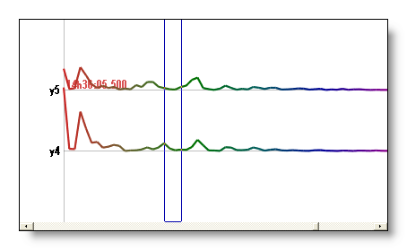
-
Sequentially shows all the spectrums for each time window of the current time cursor (which you can see in this mode and this mode ).
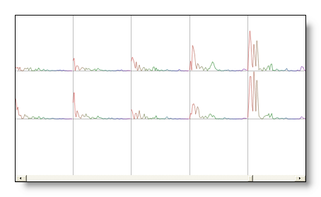
Mode Electrodes / Frequencies
Displaying all the Frequencies for each Electrodes.
The Averaging button and the Tracks / Intensity button states affect the display in the following ways:
-
The selected frequencies are shown separately as tracks.
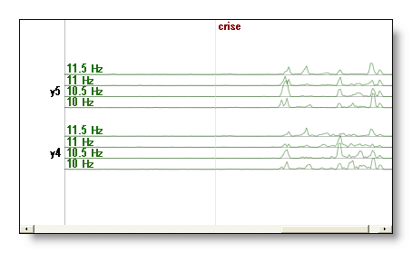
-
The selected frequencies are shown separately as intensities (aka Waterfall).
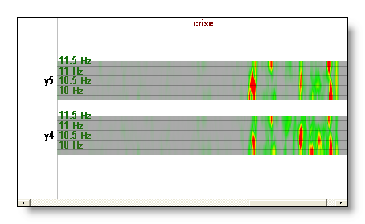
-
The selected frequencies are averaged together , and shown as tracks.
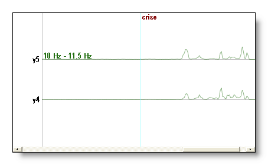
Mode Frequencies / Electrodes
Displaying all the Electrodes for each Frequencies, reversing the arrangement of Mode E / F.
This one mode is useful to compare electrodes latencies for each frequency separately.
The Averaging button and the Tracks / Intensity button states affect the display in the following ways:
-
The selected electrodes are shown separately as tracks.
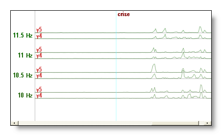
-
The selected electrodes are shown separately as intensities.
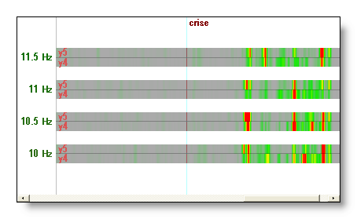
-
The selected electrodes are averaged together and shown as tracks.
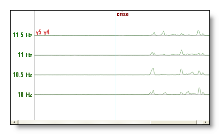
Averaging
Average / Enumerate the last dimension displayed, which depends on the current mode:
-
Mode Spectrum: average through the current
selected time.
-
Mode Electrodes / Frequencies:
average the selected frequencies.
- Mode Frequencies / Electrodes: average the selected electrodes.
Let's have an example: the Spectrum display shows the frequencies for each electrode, the remaining dimension is therefor time. If the Average button is On, then all time frames selected will be averaged together, giving the Average Spectrum (nothing to be scared of, you see?).
Tracks / Bars / Intensity
display
According to the current mode, this button lets use choose between Tracks (line plots), Bars (filled) and Intensity (colors) displays:
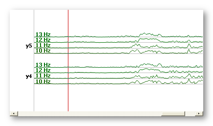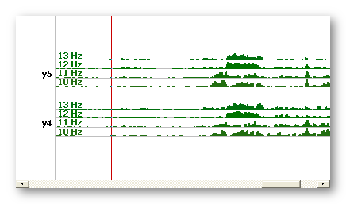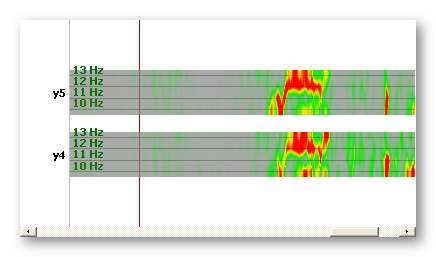
Previous frequency 
Moves the current frequency range to the previous frequency range,
for example 5-14 Hz to 4-13 Hz. The actual value of the step
depends on how the file was computed. If there is only one current
frequency, and not a range, it behaves the same by shifting this frequency.
It has not effect if the range's lowest frequency has reached the
minimum frequency of the data.
See also Frequency navigation with the mouse, and Frequency navigation with the keyboard.
Next frequency
Moves the current frequency range to the next frequency range, for
example 5-14 Hz to 6-15 Hz. The actual value of the step
depends on how the file was computed. If there is only one current
frequency, and not a range, it behaves the same by shifting this frequency.
It has not effect if the range's highest frequency has reached the
maximum frequency of the data.
See also Frequency navigation with the mouse, and Frequency navigation with the keyboard.
Less frequencies
Shrinks the actual frequency range by removing its highest frequency,
f.ex. from 5-14 Hz to 5-13 Hz.
It has no effect if there remains only one frequency.
See also Frequency navigation with the mouse, and Frequency navigation with the keyboard.
More frequencies
Expands the actual frequency range by adding one more frequency to
its highest frequency, f.ex. from 5-14 Hz to 5-15 Hz. If the highest
frequency has been reached, it continues expanding through the lower frequencies.
It has no effect if all frequencies are already selected.
See also Frequency navigation with the mouse, and Frequency navigation with the keyboard.
Normalize power frequencies
When On, and whatever the current mode, it will normalize the frequencies' power.
It is a fact that low frequencies do have more powers than high ones. But we may be interested to see also the high frequencies' behavior. To cope with the intensity level differences, people usually simply increase the global scaling of the whole display, or select a sub-range of frequencies .
But to allow seeing all the frequencies simultaneously, we need to counter-balance the power differences across frequencies . Then only on the same display one can clearly see all the frequencies equally weighted. Power doesn't account anymore, just the patterns of frequencies in time . Stated otherwise, it allows you to see what changes in the frequencies.
See here how Cartool does the estimation of each frequency's power.
Here are some examples, before and after frequency normalization:
-
In this spectrum display, we discriminate better all the peaks in the high frequencies, and neutralize the lowest frequencies that don't change that much.
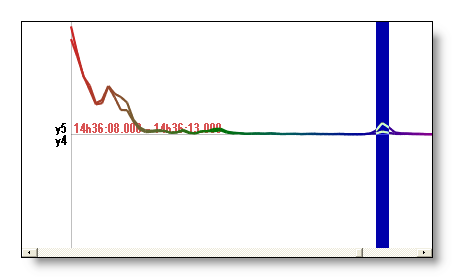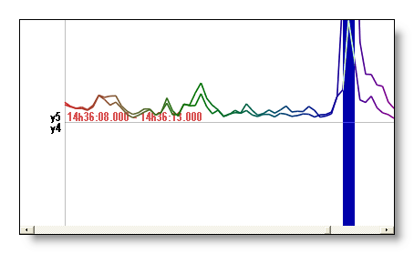
-
In this waterfall display, it behaves like a vertical adaptive scaling (filter), each frequency being independently rescaled. It tremendously helps in seeing where the signal changes, especially in the high frequencies.
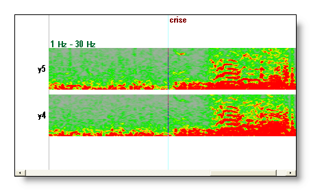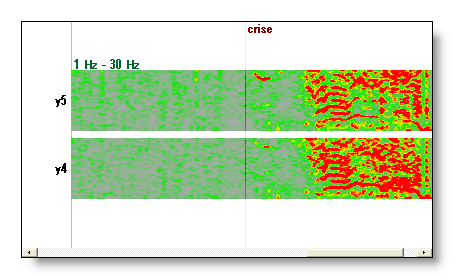
Frequency - Mouse
Quite the same as the EEG Mouse actions (some slight differences, though, as no Baseline offset shifting is available).
Time navigation
If not in Spectrum display, the mouse will update the time cursor (shown in red), as usual.
Frequency navigation
If in Spectrum display, the mouse will update the frequency cursor (shown in blue), not the time cursor:
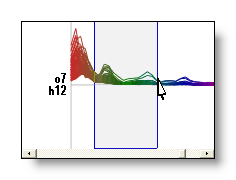
If not in Spectrum display, by pressing F before a mouse operation, it will try to apply it to frequencies (when meaningful). F.ex. F + right click in a vertical motion will scroll through the frequency range, instead of scrolling through electrodes.
See also Frequency navigation with the keyboard, and Frequency navigation with buttons.
Frequency - Keyboard
Quite the same as the EEG Keyboard actions .
Time navigation
Whatever the mode you are currently in, the EEG keys to navigate in time remain fully functional. F.ex. though in Spectrum display, pressing the left or right arrow keys will move the time cursor accordingly, and display the updated spectrum.
Frequency navigation
Whatever the mode you are currently in, by pressing F before another key will try to apply the usual command to frequencies (when meaningful). F.ex. F + right arrow or down arrow would scroll downward through the frequency cursor.
The F shortcut redirects the main functions of the time cursor to the frequency cursor .
Another point, when trying to shift frequencies with the keyboard, which arrow keys you can use is contextual dependent. Use Left and Right arrow keys if the frequencies are on the X axis, Up and Down arrow keys if the frequencies are on the Y axis.
See also Frequency navigation with the mouse, and Frequency navigation with buttons.
Frequency - Menus
Quite the same as the EEG Menus, with the following variations or additions:
Options menu
Reference
Has no effect, it has no meaning to change the "reference".
Recomputes the frequency normalization factors on the current time windows. To turn it off, however, simply uncheck the button.
Saving frequency normalization
Saves the frequency normalization curve to file.
Show / hide 3D dimension description
All the time we are browsing in a 3 dimensions space (electrodes x frequencies x time). The main 2 dimensions for the current mode are clearly shown on the X and Y axis. The description of the 3d one is inserted inside the plotting, when enough space is available. But you can turn this information off.
Three examples from Mode E / F: electrodes y14
and y5 (Y axis) in time (X axis), the 3d dimension is
consequently frequency, 7/8/9 Hz on the first picture (enough
space), 7 to 20 Hz (less space to display) on the second picture, and
again on the third one but with the display turned off:
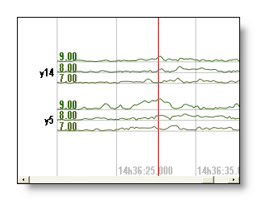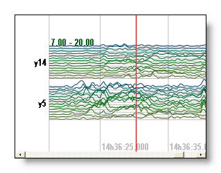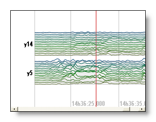
Frequency - Technical points
Time considerations
Each time point, f.ex. in Mode E / F, is actually the center of the time window that was originally transformed. Of course, after transformation you don't see it as a window anymore, as it has been splitted in different frequencies. Just remember that the time displayed in the title bar or cursor is the mean time of the time windows.
In all modes except in Mode spectrum, time is represented on the X axis, as in an EEG display. The time cursor is visible and is only a part of the display. You can update it through mouse or the keyboard operations.
However, in the Mode spectrum, the time cursor is not visible. The spectrums currently shown are the one within the current time cursor only. Still you can update the time cursor, and instantly see the results, either:
-
with Right and Left arrow keys
- by right clicking with an horizontal motion
- by moving the scrollbar below the window
- by changing the horizontal scale zoom, either with buttons, keyboard or mouse.
Time and Frequency Cursors
While browsing the data, there are always 2 active cursors, one for time (actually time windows) and one for frequencies.
The first one is drawn in red, the second one in blue. Both interact simultaneously with the current display , and by switching between modes you can conveniently modify one of the two cursors and instantly see the results.
For example with frequencies 18-30 Hz and 4 windows selected (for a few electrodes to clarify the display), the frequencies on the left are the average of the 4 windows on the right, and the tracks on right are an average of the 13 frequencies of the left:
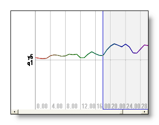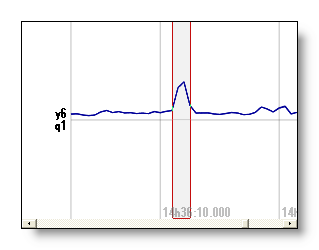
See also the mouse operation.
Color scheme
If the display is showing tracks (i.e. not intensities), and in any mode, a color scheme is applied to help you distinguish between frequencies. A dark rainbow color table is matched to frequencies, with low frequencies assigned to dark red and high frequencies assigned to dark violet.This coloring is of course relative to the frequency span of the current file, and is not absolute.
F.ex with frequencies on X axis and Y axis respectively:
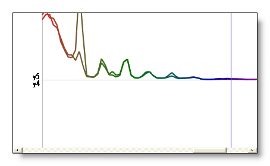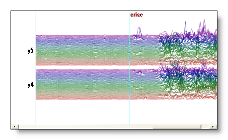
Frequency normalization
It is well known that the power of the FFT follows a distribution that quickly decays with increasing frequencies. It has the huge disadvantage of hiding the high frequency peaks, and overemphasizing the low frequency ones. The idea to overcome this effect is to normalize the power of each frequency, so as to give each frequency the same weight. See here for some examples.
The current normalization method is to simply use the inverse of the mean frequency values across all electrodes.
See here an example of the mean powers and the resulting normalization curve (frequencies are on the X axis):
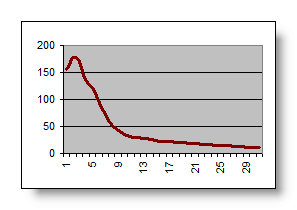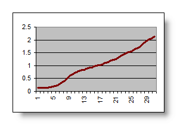
You can judge by yourself if the normalization is doing its job correctly by looking at noisy data wihout signals, as you should see the same average intensity for all frequencies. See an example of "noisy" data vs interesting patterns that occur later on:
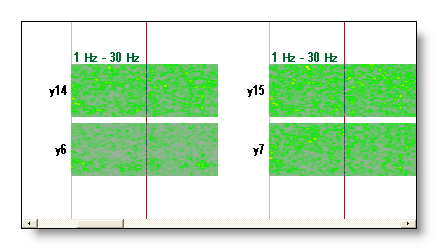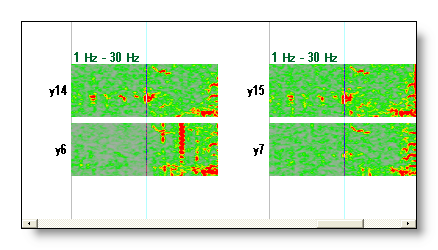
Notes:
- You can save the normalization curve from the Options menu.
- You can re-apply the frequency normalization anytime by using the data currently displayed.
- The frequency normalization only applies to the display, and does not modify your data.
Frequencies auto-scaling
Cartool provides a very convenient auto-scaling of the currrent displayed frequencies , at any time and in all modes.
What is meant here is that the display always uses the strongest frequency to calibrate the maximum displayed . If you change which frequencies are shown, the new frequency maximum will be taken. In this way, you always have the most optimal display without having to change (much) your tunings. Also, don't be surprised when seeing some variations when browsing frequencies, this is the auto-scaling in action!
An example here, the same display but with frequencies slightly shifted higher on the second picture. As the lowest (strongest) frequencies disappear from the display, the frequency auto-scaling re-adjust the maximum to the new available frequencies, thus making the new lowest ones look brighter:
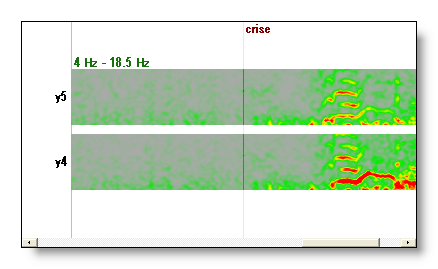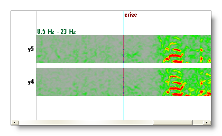
Well, that mechanism can not be turned off, FYI.
Note: this is not to be misunderstood with the intensity auto-scaling , which automatically adjusts the intensity maximum. But the combination of the two is very convenient, for sure.
Quality of display & Copy as Bitmap
Displaying in intensity modes (here and here) is quite demanding in computer resources, especially with a lot of tracks. Cartool automatically and seemlessly adapts the quality of the display to allow reasonable display times. For examples, it simplifies the color drawing when a lot of tracks with a lot of frequencies are drawn. This could explain some strange changes you may see in the display.
Though, when using Copy as Bitmap , Cartool understands you are about to publish incredible results (yes, it does), so it will use the maximum quality. The drawback is that you may have to wait a while (~10 secondes) until the end of the snapshot. You may also use this feature if you want to see all the finest details. Note that the high quality is automatically turned on when the tradeoff between the number of tracks and the time range displayed is acceptable.
Here is an example of low versus high quality intensity display:
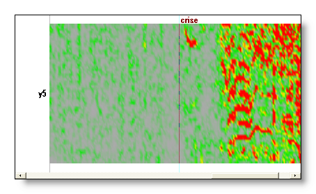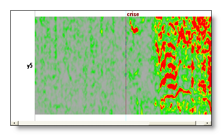
More on displays with frequencies
Displaying frequencies as maps
Yes, you can do this, and it is straightforward! Through the link mechanism , and by using freq files instead of EEG files, you can do exactly the same things as with EEG! F.ex. by adding some electrodes coordinates file you get the maps of the current frequency.
Move the frequency cursor to change the current displayed maps. For now, only the lowest frequency selected is shown , or the average selected frequencies if in this mode .
Here, f.ex., a FFT Approximation at 7.84 Hz linked with the electrodes coordinates, showing two different maps:
|
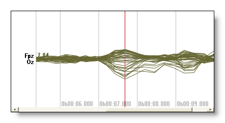 |
+ |
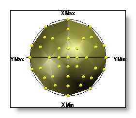 |
|
= |
||
|
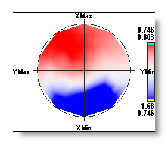 |
or |
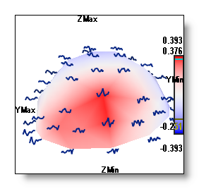 |
Showing the frequencies geometrically distributed
Again, with the same link mechanism as above, you can show the frequencies geometrically distributed according to the electrodes. Note that this is done directly within the frequency display.
F.ex. in 2D here, some frequencies in time, and some waterfall:
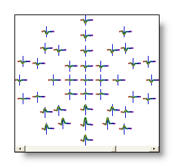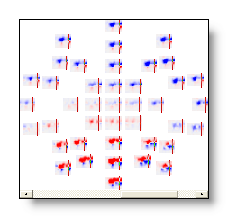
Linking and superimposing frequencies from other files
As for EEGs, you can superimpose and compare data from other files in the current display mode (well, doesn't work in Intensity mode ). Note that this is done directly within the frequency display.
Here is an example of the spectrum of a given file, then the same spectrum (turned to black) with two other files on top of it (red and green respectively):
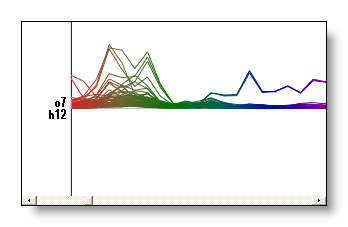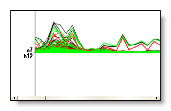
You can change the display mode or any other parameters en route without problems while working with superimposed data. Although note a slight slow down if you link with too much files.